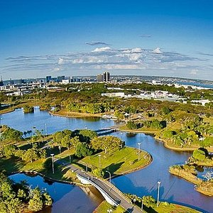
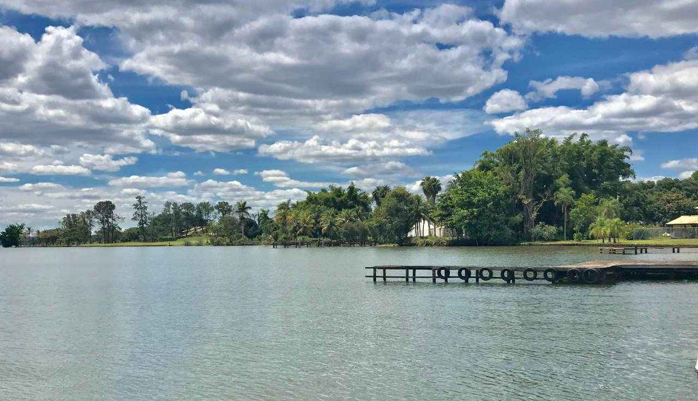
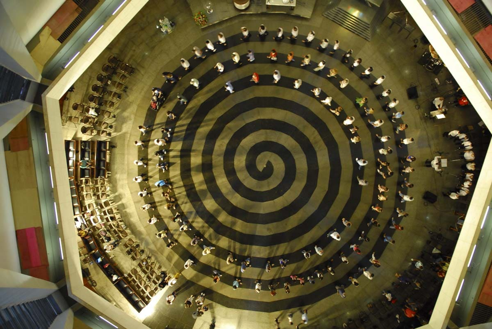
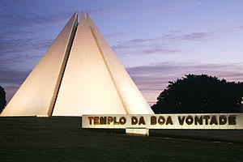
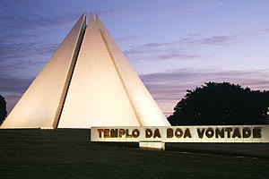

Um pouco sobre Brasília
O Aniversário de Brasília é comemorado anualmente em 21 de abril. A data é considerada feriado na cidade.
Brasília é a capital do Brasil, uma cidade que foi planejada, projetada e construída com o propósito de ser a sede do governo brasileiro.
A cidade de Brasília está localizada no Distrito Federal, e é conhecida como uma das mais importantes criações do arquiteto Oscar Niemeyer, em parceria com o urbanista Lúcio Costa.
O “Plano Piloto”, como foi apelidado o projeto urbanístico da cidade, começou a ser criado em 1956, e custou ao todo cerca de 1 bilhão de dólares.
Brasília foi inaugurada em 21 de abril de 1960, pelo então presidente Juscelino Kubitschek, passando a ser a terceira capital do Brasil, após Salvador e o Rio de Janeiro.
Uma particularidade da cidade de Brasília é o seu formato similar ao de um avião, quando vista de cima.
Parque da Cidade
Desde a sua fundação, em 11 de outubro de 1978, a estrutura localizada no coração da capital se transformou em ponto de encontro diário para milhares de brasilienses. O local reúne o trabalho do quarteto ícone da capital. Com projeto de Oscar Niemeyer, obra paisagística de Burle Marx e área urbanística desenvolvida por Lúcio Costa, o Parque ainda coleciona azulejos de Athos Bulcão.
O Parque da Cidade contabiliza, em uma área de 420 hectares, uma série de atrativos para todas as idades, como churrasqueiras, quadras para a prática de modalidades esportivas, parques infantis, praças, lagos, Centro Hípico, restaurantes e um extenso Pavilhão de Exposições.
Galeria
Localização
Lago Paranoá
Com mais de 110 km de extensão, o Lago Paranoá é responsável pela capital ser um dos maiores polos náuticos do país. Por suas águas é possível navegar e praticar diversas atividades. Em sua orla é possível desfrutar de uma ampla gama de bares e restaurantes com vista para o espelho-d’água. O céu é o mar de Brasília, e o Lago Paranoá é o melhor lugar para desfrutar seu vasto horizonte e se refrescar. E por meio do Brasília Tour Virtual, os brasiliense e turistas podem admirar um pouco da beleza do lago por meio da Rota Náutica.
Galeria
Localização
Templo da Boa Vontade
Em forma de pirâmide, o Templo da Boa Vontade chama bastante atenção de peregrinos e turistas de várias partes do mundo. São sete faces, revestidas em mármore branco, em plena capital do Brasil. Entretanto, o interior do monumento é o que mais fascina: o local propicia a autorreflexão e a paz. Aclamado como uma das Sete Maravilhas de Brasília, o Templo da Boa Vontade segundo dados da Secretaria de Estado de Turismo do Distrito Federal (Setur-DF), é o mais visitado da capital brasileira, recebendo anualmente mais de um milhão de pessoas.
Galeria
.jpg) 
 Localização
Museu Nacional da República
O Museu Nacional é integrante do Conjunto Cultural da República. É um espaço que insere Brasília no circuito internacional das artes e mostra o que há de melhor na arte brasileira. O espaço é utilizado para exposições itinerantes de artistas renomados e temas importantes para a sociedade, palestras, mostra de filmes, seminários e eventos importantes. Dessa forma, contribui para a educação democrática por meio da cultura e ativa o turismo.